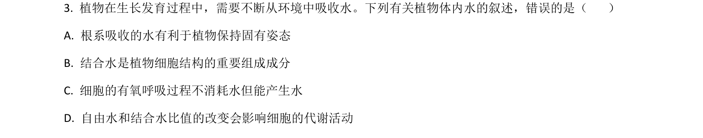
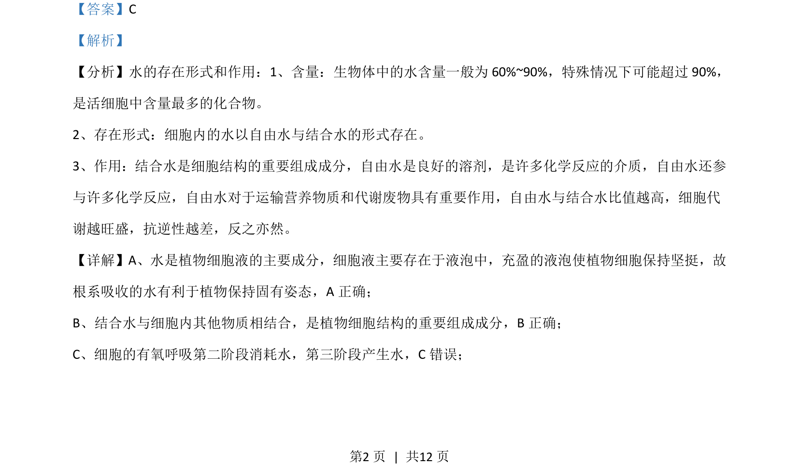
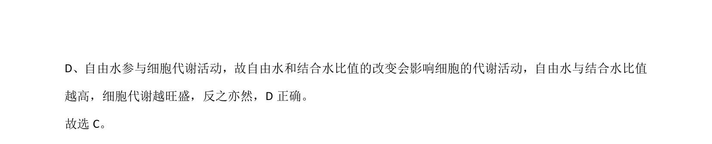

考点：甲基绿-吡罗红染色 盐酸作用 细胞通透性 DNA与蛋白质分离

该题考查“观察DNA和RNA在细胞中的分布”实验中关键试剂的作用和原理。


📄 原 PDF 第 2 页：
素材/真题/吉林/2008-2024·（吉林）生物高考真题/2021年高考生物试卷（全国乙卷）（解析卷）.pdf
【答案】C 【解析】 【分析】水的存在形式和作用：1、含量：生物体中的水含量一般为 60%~90%，特殊情况下可能超过 90%， 是活细胞中含量最多的化合物。 2、存在形式：细胞内的水以自由水与结合水的形式存在。 3、作用：结合水是细胞结构的重要组成成分，自由水是良好的溶剂，是许多化学反应的介质，自由水还参 与许多化学反应，自由水对于运输营养物质和代谢废物具有重要作用，自由水与结合水比值越高，细胞代 谢越旺盛，抗逆性越差，反之亦然。 【详解】A、水是植物细胞液的主要成分，细胞液主要存在于液泡中，充盈的液泡使植物细胞保持坚挺，故 根系吸收的水有利于植物保持固有姿态，A正确； B、结合水与细胞内其他物质相结合，是植物细胞结构的重要组成成分，B正确； C、细胞的有氧呼吸第二阶段消耗水，第三阶段产生水，C 错误；